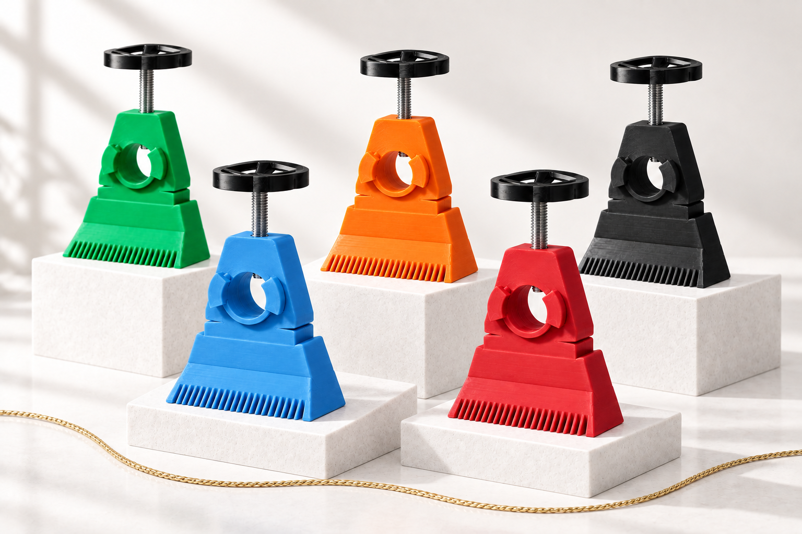

SI 3D PROJECT / O nas
Cześć! Tu Iza i Sebastian
Miały być Bieszczady.
Została z nami pasja.
Czasem coś, co ma rozwiązać jeden mały problem,
otwiera zupełnie nowy rozdział. U nas tak właśnie było.
Mały problem. Wielki początek.
Zaczęło się
od kawałka kartonu.
Przy pracy inżynierskiej Izy budowaliśmy solarny układ nadążny — taki, który podąża za słońcem. Fotorezystory potrzebowały osłony. Pierwszy pomysł? Karton. Szybko okazało się, że potrzebujemy czegoś lepszego.
Kupiliśmy więc pierwszą, prostą drukarkę 3D. W planach były Bieszczady, ale zamiast wyjazdu pojawiło się coś, co zostało z nami na dłużej: radość z tego, że własny pomysł można naprawdę wziąć do ręki.
Tak zaczęło się nasze „a gdyby to wydrukować?”.
Coś od nas. Dla naszych bliskich.
Potem wydrukowaliśmy
trochę wspomnień.
Na początku drukarka pracowała tylko od czasu do czasu. Aż pojawiła się wyjątkowa okazja — nasz ślub.
Stworzyliśmy magnesy dla gości i napis LED do dekoracji. Drobne rzeczy, ale nasze. Takie, w których poza projektem i materiałem było też trochę serca.
Po ślubie wróciliśmy do drukowania z nową energią. Zaczęliśmy sprawdzać, co jeszcze możemy stworzyć razem.
Coraz więcej własnych pomysłów.
Od „spróbujmy”
do „to działa”.
Z czasem pojawiła się bardziej profesjonalna drukarka, nowe materiały i jeszcze więcej ciekawości. Eksperymentowaliśmy i coraz chętniej sięgaliśmy po własne projekty.
Tak powstał nasz uchwyt do sznurka brukarskiego. Praktyczny, przemyślany i dziś już flagowy produkt SI 3D Project. Dowód na to, że z małego „a gdyby” może powstać coś przydatnego.
Poznaj nasz uchwyt
04 / Najważniejsze się nie zmieniło
Za każdym projektem
nadal jesteśmy my.
Nie jesteśmy firmą ani dużą drukarnią. Jesteśmy Izą i Sebastianem — dwójką ludzi, których cieszy projektowanie, drukowanie i odkrywanie, co jeszcze można zrobić.
SI 3D Project to nasza wspólna pasja. I kolejny powód, żeby powiedzieć sobie: „chodź, spróbujemy”.
Następny pomysł może być Twój
A Tobie co chodzi po głowie?
Napisz nam o tym. Może właśnie od tej wiadomości
zacznie się coś, co razem uda się wydrukować.